PROJECT CASE STUDY
A light-filled orangery designed to create a comfortable everyday living space with a strong connection to the garden, while providing valuable extra room for larger family gatherings and entertaining.
The property already enjoyed a beautiful countryside setting. The aim was to create additional living space that would make the most of those surroundings while working naturally with the character of the existing home.
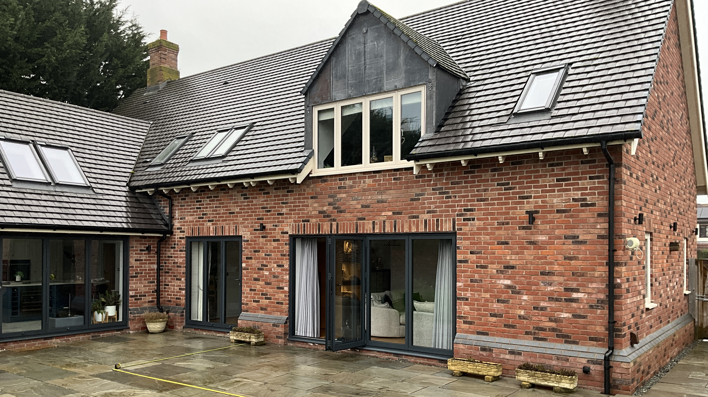
The design developed into a highly glazed orangery with a solid roof perimeter and central roof glazing. This combination creates the feeling of a substantial extension while allowing natural light to remain at the heart of the room.
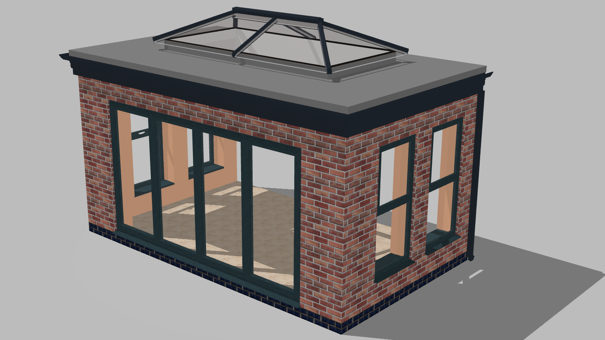
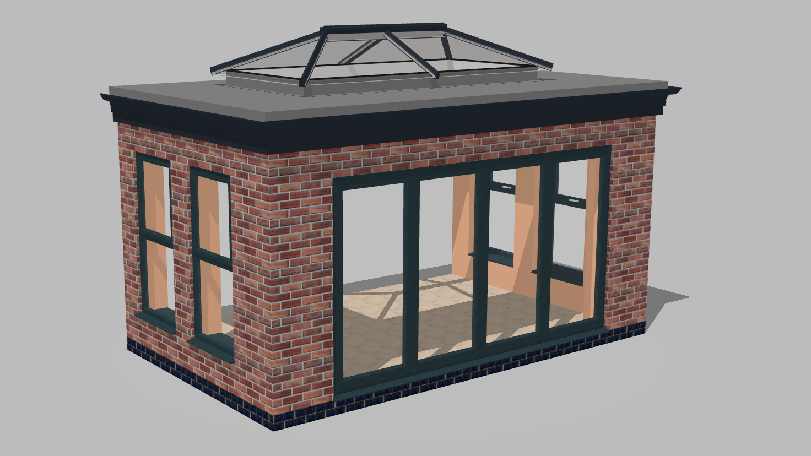
Placing the proposed orangery against the existing property made it possible to explore its proportions, glazing and relationship with the house before moving on to the final visualisation.
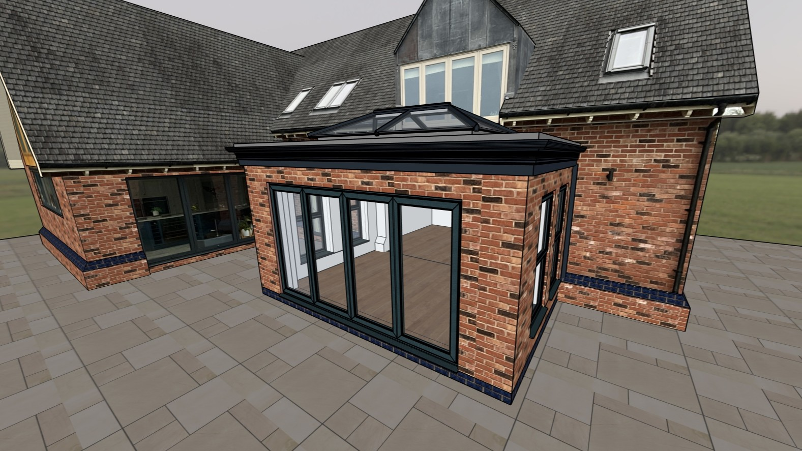
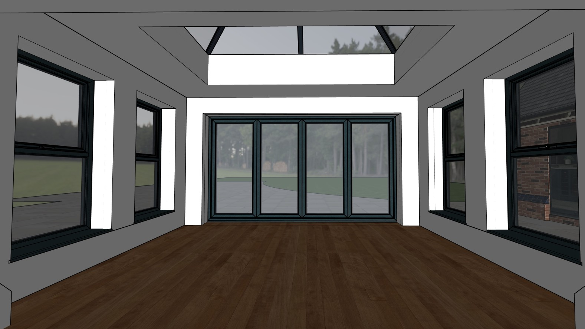
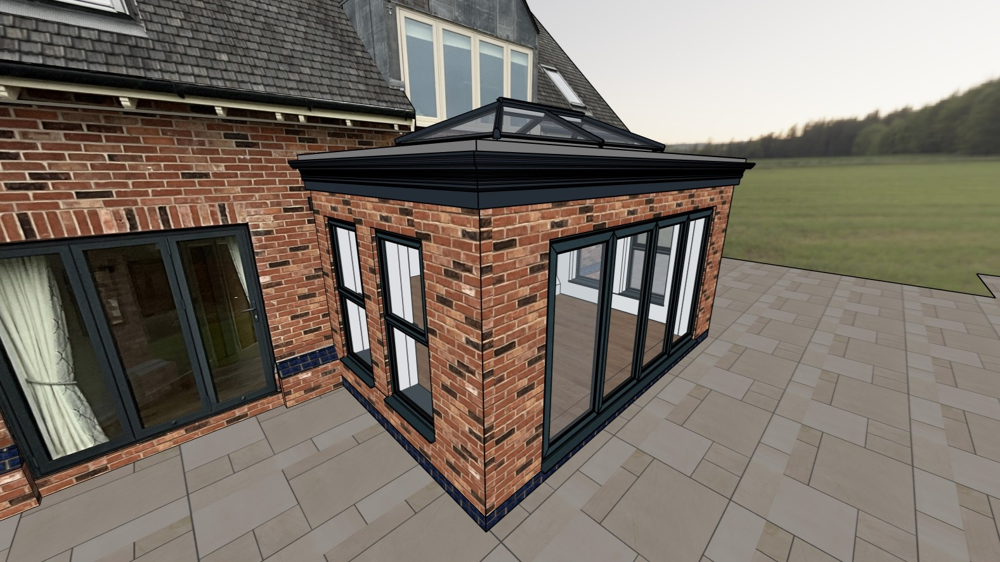
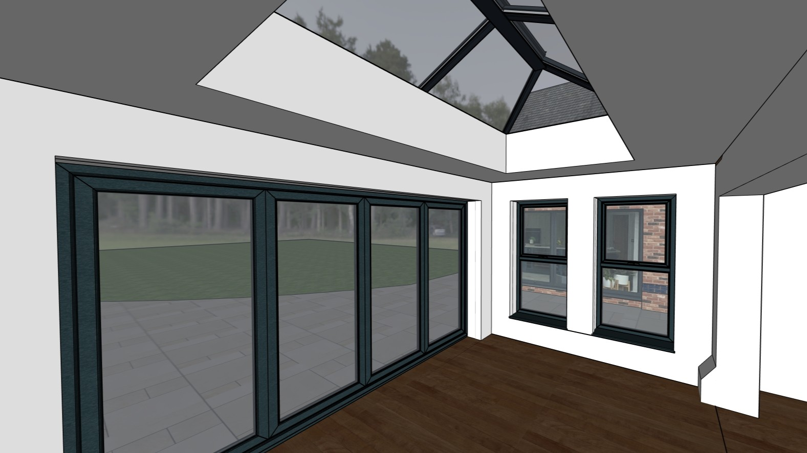
The exterior visualisations show how the finished orangery could sit naturally against the existing property, with extensive glazing opening the new room towards the garden and surrounding countryside.

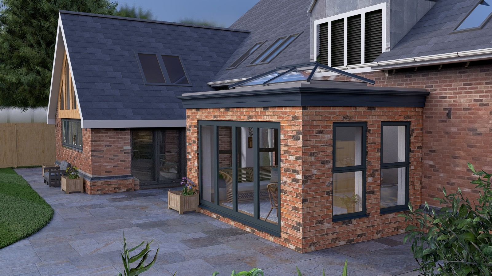
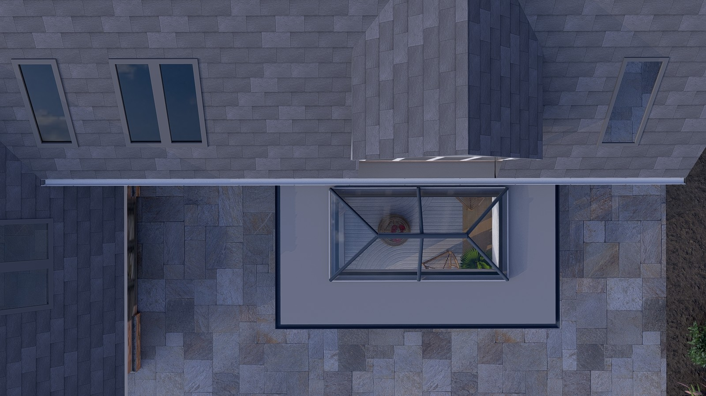
Inside, the focus was on creating a bright and relaxing living space with views out towards the garden. The existing bifold doors could be reused within the new orangery, helping create a flexible connection between the existing home and the new room.
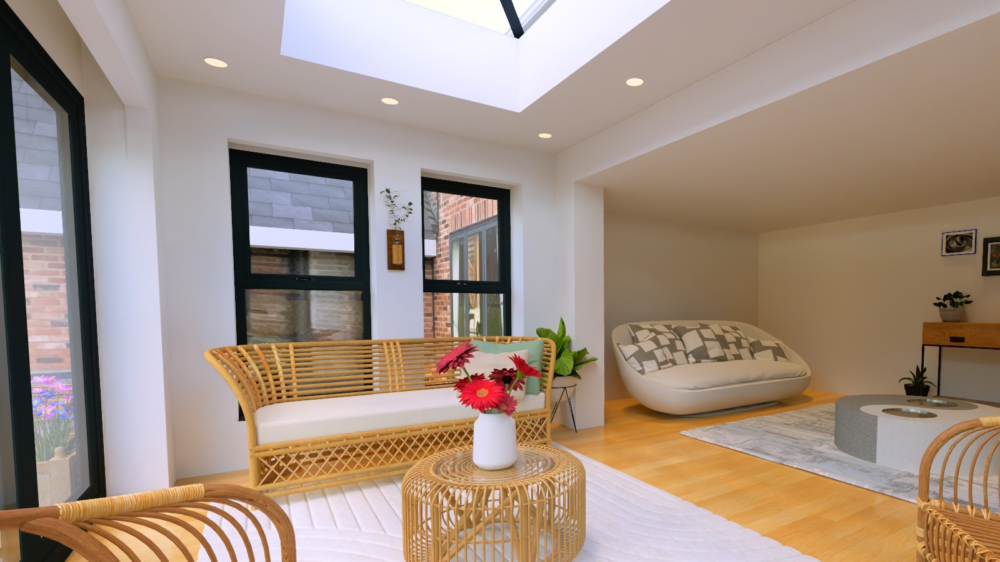
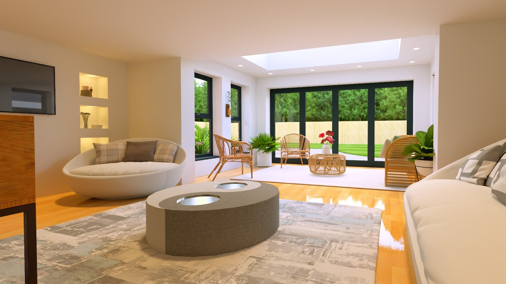
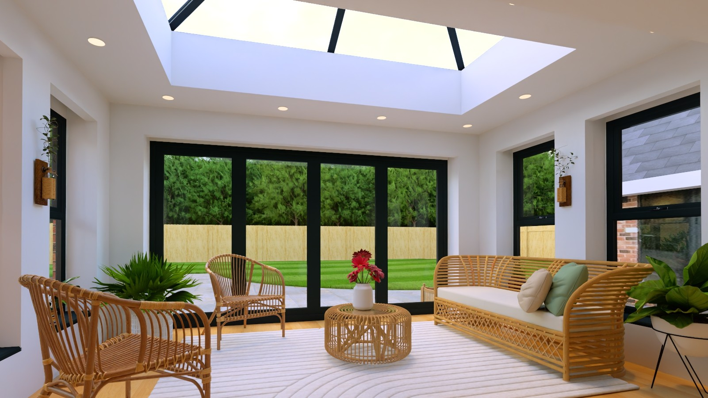
Explore your ideas in 3D and see how a new extension, orangery or conservatory could transform the way you use your home.
Start Your Project